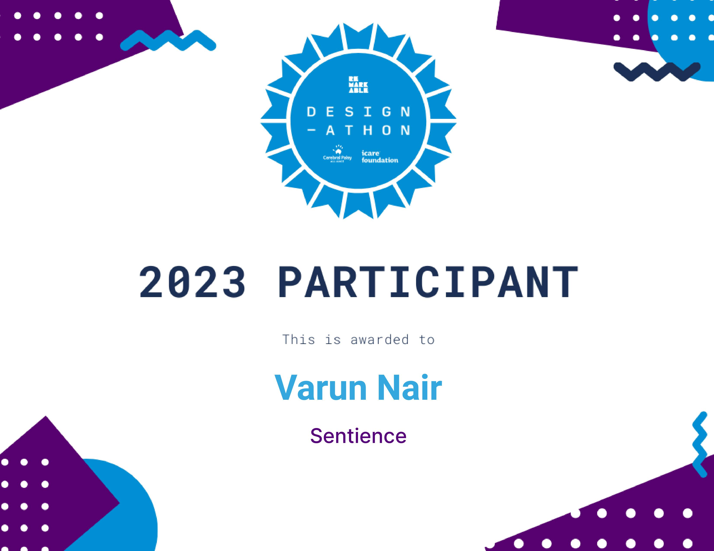

Who are Remarkable?
Remarkable is the innovative startup accelerator committed to developing tech startups that positively impact people with disability and amplify human potential.
What is the Remarkable Design-athon?
It is a 5 week challenge that invites budding entrepreneurs to solve problems identified by their community using an inclusive design methodology with the intent to see more products and services, in turn answering this very mission. Their services include :
Our Problem Statement & Our Mentor - Impactful AI
How might we use AI to enable greater independence and participation for people with disabilities in their daily lives and in their communities?
Session 0 - IntroductionProblems Identified
1. Incomplete Communication Solution
People with
disabilities lack a complete language solution that covers various communication methods like Sign
Language, ProTactile, Braille, and PECS.
2. Communication Blocks
Existing gaps create
difficulties in understanding each other, making conversations and interactions challenging.
3. Left Out Socially
Limited communication tools
isolate individuals with disabilities, making it hard to engage in social activities.
4. Learning Hurdles
Inadequate language support in
education settings affects learning and participation in class.
5. Job Barriers
Incomplete communication tools
hinder career opportunities and job-related communication.
6. Personal Growth Stalled
Lack of comprehensive
communication limits personal development and self-expression.
7. Unequal Access
Inaccessible communication tools
create disparities in accessing important services like healthcare.
8. Interpreter Dependency
Heavy reliance on
interpreters reduces independence and can lead to misunderstandings.
9. Legal and Advocacy Struggles
Legal rights and
advocacy efforts are needed to ensure equal communication access.
10. Technical Challenges and Costs
Developing and
implementing a complete solution involves complexity and high expenses.
Our Solution - SYNC
SYNC is an AI Language Interpretation App supporting people with disabilities. It interprets Sign Language, ProTactile, Braille, and PECS, aiming to enhance communication access and empower self-expression.
Brand Logo AnimationFeatures & Functionality
AI Models for Diverse Languages
Understand User Inputs Precisely
Effective
Communication Methods
Instantly Interprets for Discussions
Eliminates Communication Delays
Effortless
Interaction Methods
Image Recognition for PECS
Gesture Recognition for Hand-Signs
Hands-Free Voice Control
Primary Research - Mentor Interview
In a recent collaboration with our AI Mentor, Elizabeth Chandler, we embarked on primary research that yielded profound insights. Here's a summary of the interview:
1. Explored intricate challenge with Elizabeth's guidance.
2. Identified potential of a user-friendly mobile app.
3. App envisioned to empower specially-abled communication.
4. Emphasis on seamless integration into diverse lifestyles.
Interview with Elizabeth ChandlerSecondary Research - Competitor Analysis

User Persona

Storyboard Sketches
In the case study's Storyboard section, we use two types of storyboards to showcase SYNC's user experience. The "User Journey Storyboard" presents real-world scenarios, capturing user actions and emotions. The "App Interaction Storyboard" zooms into SYNC's interface, detailing user interactions step by step. These storyboards provide a comprehensive view of SYNC's impact and usability across various contexts.
 User Journey Storyboard
User Journey Storyboard
 App Interaction Storyboard
App Interaction Storyboard
User Journey Mapping
In the case study's User Flow section, we showcase how SYNC's design and features are strategically organized to align with user needs. Through intuitive navigation paths and hierarchies, users can seamlessly explore SYNC's capabilities. This user-centric approach ensures clarity and accessibility, enhancing the overall user experience within the app.
SYNC - User FlowLow Fidelity Wireframes
SYNC's Low Fidelity Wireframes lay the groundwork, emphasizing functionality over aesthetics. These blueprints focus on layout, interaction points, and content organization. By prioritizing simplicity, they guide user experience decisions, aligning SYNC's design with user needs.
Lo-Fi WireframesApplication Style Guide
In SYNC's Style Guide, a vibrant color palette takes center stage, featuring a gradient that
transitions from vibrant pink to deep purple and soothing blue. This progression embodies
communication's transformative journey, symbolizing inclusivity and empowerment.
Alongside this
gradient, the Style Guide encompasses key UI components that define SYNC's visual identity.
UI Design & Prototype
In SYNC's UI Design and Prototype phase, the app's visual and interactive elements converge for a seamless user experience. The Interpretation Flow ensures smooth communication, covering Sign Language, ProTactile, and PECS. A Learning Module enhances sign language skills, while Profile and Onboarding Pages personalize the experience. This phase transforms SYNC into a dynamic application, set to empower diverse users in their communication journey.
High-Fidelity Wireframes Working Prototype ModelPresentation Showcase
The final week of our Remarkable Design-athon was the culmination of five weeks of dedicated effort. Our team, comprised of strangers turned collaborators, meticulously crafted a compelling pitch for our visionary idea and its flawless execution. This period of intensive teamwork and unwavering commitment led to an unparalleled experience. We extend our sincere appreciation to Team Remarkable for orchestrating this exceptional journey.
Final Week Pitch  Remarkable Design-athon Certificate